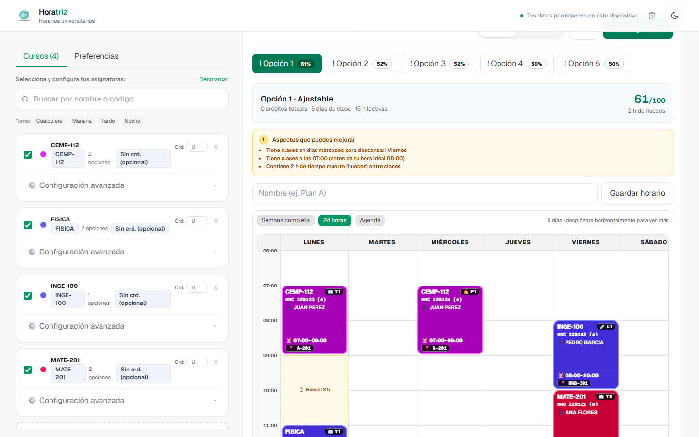
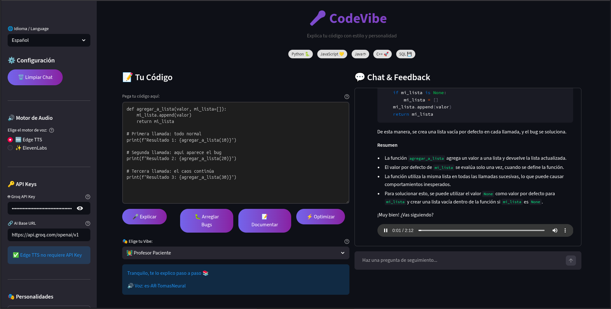

Prototipo académico · Python
MaternIA
Triaje materno-fetal preventivo con modelos separados de riesgo materno y estado fetal, integrados con reglas de prioridad.
↗Soy Rodrigo, también bel001 en GitHub. Desarrollo aplicaciones web, proyectos de IA y herramientas de escritorio. Aquí puedes abrir, revisar y probar mi trabajo.
Explorar proyectos
Genera horarios universitarios a partir de la oferta académica y compara opciones según las preferencias del estudiante.

Un tutor interactivo que explica código con distintas personalidades y voces.
Una plataforma para una empresa de paquetería. Once agentes coordinados con LangGraph procesan cada envío, y los casos críticos se detienen hasta que una persona los revisa.
Triaje materno-fetal preventivo con modelos separados de riesgo materno y estado fetal, integrados con reglas de prioridad.
↗Detecta equipos de protección personal en imágenes y video de obra mediante YOLOv8 y muestra alertas visuales.
↗Una app para organizar clases, tareas y proyectos durante la vida universitaria.
↗Monitorización y opciones de optimización de memoria RAM para Windows, con exclusión de procesos.
↗En mi GitHub conviven productos web, herramientas de sistema, aplicaciones móviles y prototipos académicos. Trabajo con TypeScript, Python, Flutter y Rust.
Me interesa que una idea termine en algo que se pueda usar o examinar. Por eso enlazo al código y, cuando existe, a una versión pública.
Explorar mi GitHubSi alguno de estos proyectos conecta con lo que haces, puedes escribirme por LinkedIn. Mi código está abierto en GitHub.